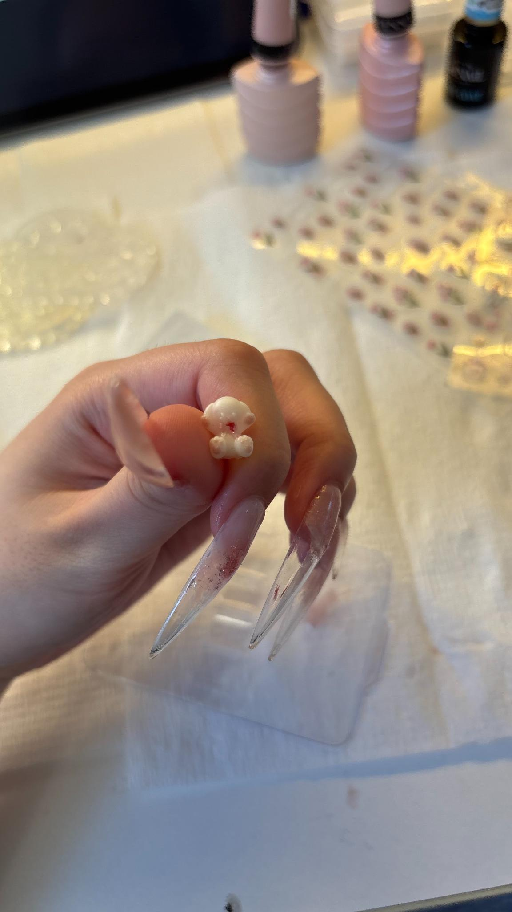
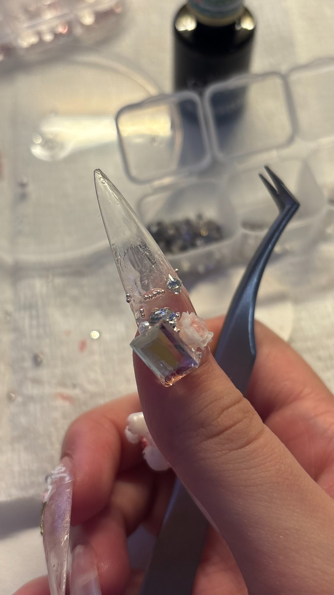
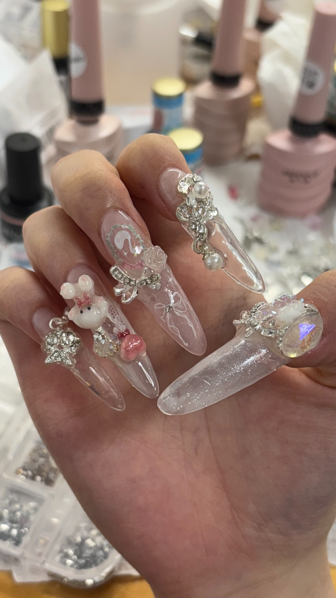
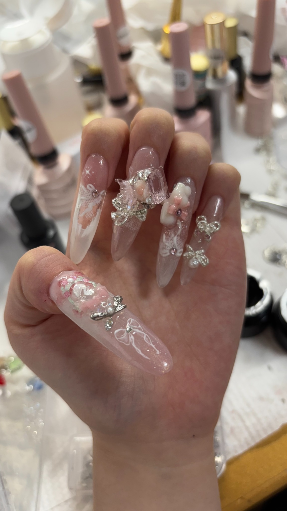
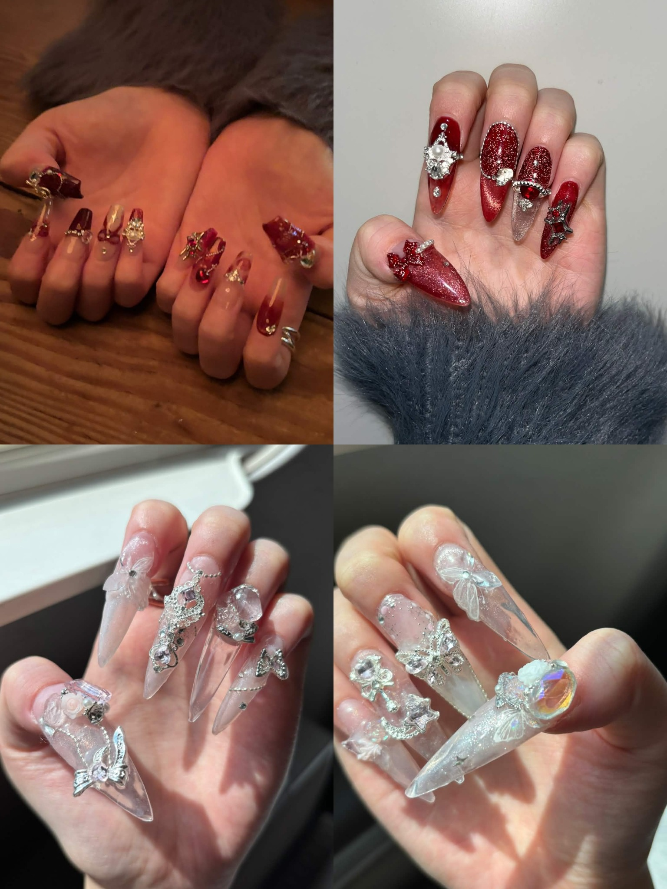
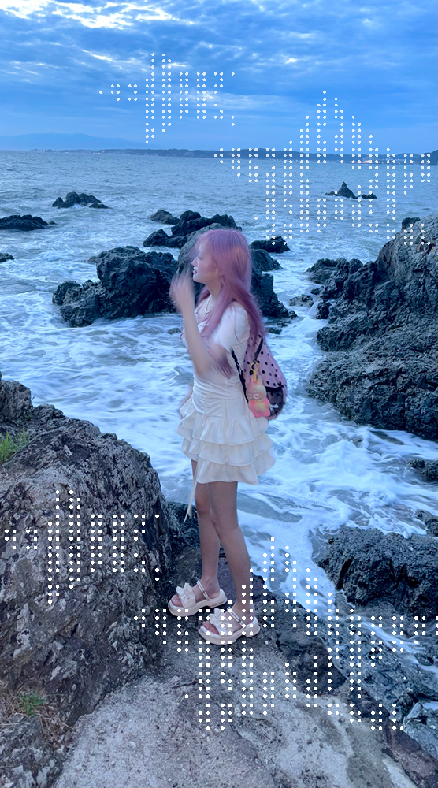
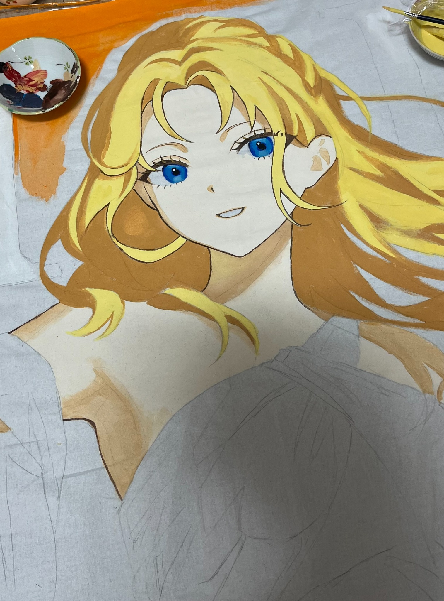
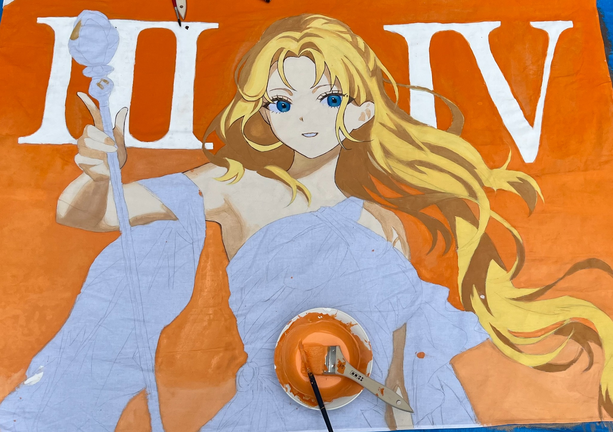
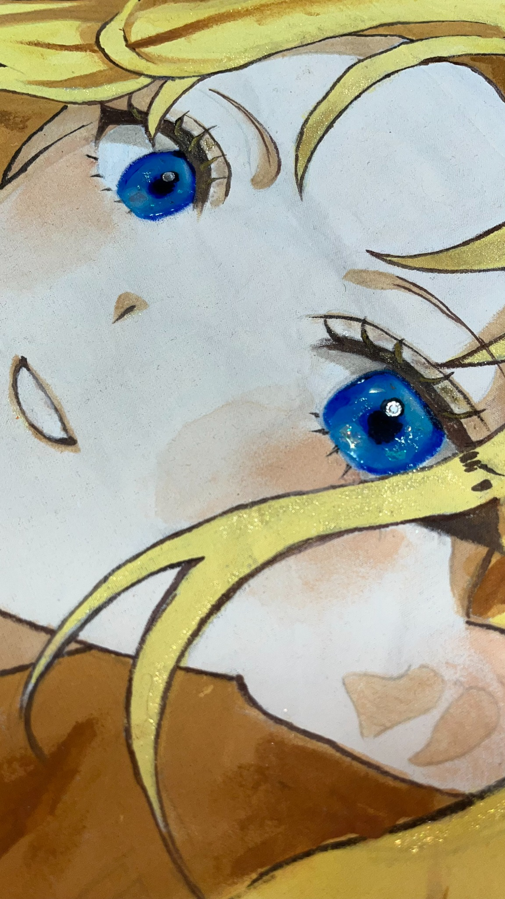

Nail の制作過程
小さなパーツをひとつずつ。配置ときらめきのバランスを探しながら。

01 / SMALL PARTS小さなモチーフから。 
02 / ARRANGEMENTストーンの位置を調整。 
03 / FINISHING TOUCHES質感と全体のバランスを確認。 
04 / ANOTHER ANGLE角度を変えて、きらめきを楽しむ。
A LITTLE WORLD OF THINGS I LOVE
かわいいで、
だれかの毎日をちょっと特別に。

a little bit of kawaii ♡

grow your own way01 / HELLO, I'M REI
都内の大学で、
デザインやデータサイエンスを学んでいます。
ネイル、ダンス、アート、デザイン、PR・ブランディング、データ分析など、好きなことを組み合わせながら幅広いクリエイティブ活動に挑戦しています。
「好き」をかたちにして、見る人の心が少し動くようなものをつくることが目標です。
02 / MADE WITH LOVE
作った作品たち
作品を読み込んでいます…
03 / LITTLE EVERYDAY THINGS
つくる時間も、好きなもののひとつ。
小さなパーツをひとつずつ。配置ときらめきのバランスを探しながら。




色を重ねて、光を仕込む。アナログならではの筆致と質感を大切に。



04 / SAY HELLO
お仕事のご相談・コラボなど、
お気軽にご連絡ください！
連絡先は準備中です。公開までお待ちください ♡